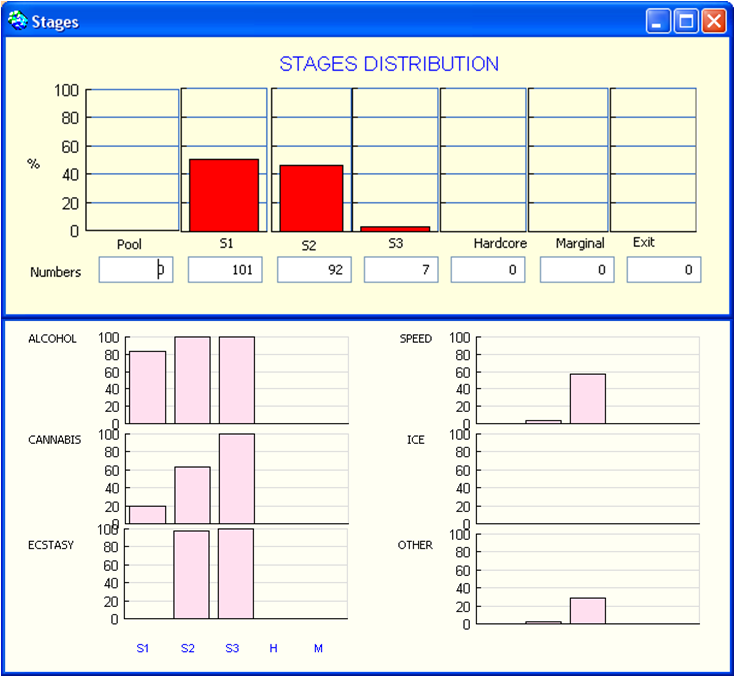

|
SimAmph: an agent-based simulation model to explore policy responses to the use of amphetamine-type stimulants and related harm amongst young AustraliansA. Dray, P. Perez, D. Moore, P. Dietze, G. Bammer, R. Jenkinson, C. Siokou, R. Green, S. Hudson, L. MaherBackgroundThe reported prevalence of psychostimulant use in Australia is among the highest in the world. Despite considerable research efforts, little is known about the social contexts of psychostimulant use and related harms. In order to better understand the influence of social contexts on psychostimulant-related
harms, a multi-site ethno-epidemiological approach was used to iteratively
inform a simulation model, called SimAmph. The model describes how social
norms and health-related experiences influence individual inclinations
to partying, drug use and bingeing. Model description Model development followed three principles: collective design, incremental design and inductive validation.The model is used to explore the impact of policy scenarios on levels
of drug-related harm and engagement in weekend partying and drug use.
The policy scenarios are: the introduction of pill testing facilities,
the use of drug detection dogs by police at public venues and the introduction
of a mass-media prevention campaign. Model code and documentationThe Cormas model is available here. A set of UML diagrams is available here. Reference David Moore, Anne Dray, Rachael Green, Susan L. Hudson, Rebecca Jenkinson,
Christine Siokou, Pascal Perez, Gabriele Bammer, Lisa Maher & Paul
Dietze. 2009. Extending drug ethno-epidemiology using agent-based modelling.
Addiction, 104(12): 1991-97. For more information, contact the corresponding author
|